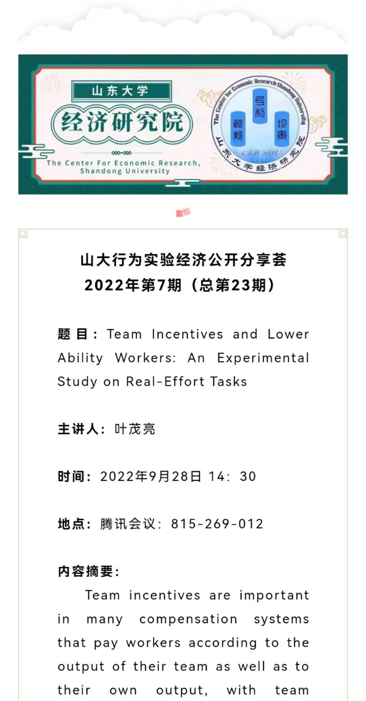

应山东大学经济研究院邀请，叶茂亮副教授于2022年9月28日在山大行为实验经济公开分享荟2022年第七期进行了题为"Team Incentives and Lower Ability Workers: An Experimental Study on Real-Effort Tasks"的线上分享。此次分享吸引了国内外相关领域数十名老师和同学的参与，引起了包括姜树广等老师和同学的热烈讨论并收获了若干建设性意见。
该分享为叶茂亮老师在劳动/人事经济学、组织经济学中团队激励、薪酬和人力资源管理方面的行为实验研究，最新版已在NBER Working Paper九月份发布（https://www.nber.org/papers/w30427?utm_campaign=ntwh&utm_medium=email&utm_source=ntwg30）。 NBER全称美国国家经济研究局，为经济学国际顶级研究机构。
